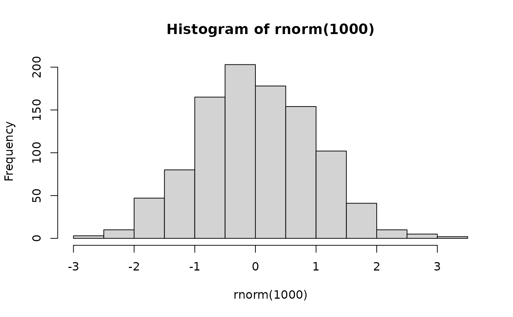

Describe method to help visualize plot types.
Describe.RdA function to help describe what a graph model would look like, to a vision impaired person.
Usage
Describe(x, VI=FALSE, ...)
# S3 method for histogram
Describe(x, VI=FALSE, ...)
# S3 method for ggplot
Describe(x,VI=FALSE, whichLayer=NULL, ...)Arguments
- x
any R object
- VI
Should
VI()be called at the same time- whichLayer
Only used with Describe.ggplot, if NULL will either display the layer if ggplot has one layer, ask user for input if it is an interactive session or print out all of the layers
- ...
other arguments, currently ignored
Details
Describe() is for explaining how a given type of graph appears to a sighted person and is intended for use by blind people who do not know how the graph looks. There is room to add hints for displaying the graphs in a more visually appealing manner.
The text description will only be generic to the plot type and not specific information for specific information see VI().
Unlike VI() and ggplot Describe needs to be explicitly called to show its output.
Value
A description in the format of a list. It will have the title, general info and RHints. If multiple layers of a ggplot are being described then it will be a list of descriptions for each layer.
Examples
# Base R
scatter = FittedLinePlot(NULL, x = rnorm(1e2), y = rnorm(1e2))
Describe(scatter)
#> A geom_point layer created with the ggplot2 framework
#>
#> General Description:
#> A scatter plot shows the relationship between two variables by plotting a symbol for each observation at the coordinates for the two variables.
#>
#> R hints:
#> A geom_point by default will by closed black dots. This can be changed with the `shape` parameter, while the size and colour can be changed with the `size` and `colour` parameter. These can be set to categorical variable to visually distinguish the groups
#>
#> A geom_smooth layer created with the ggplot2 framework
#>
#> General Description:
#> Provide a smoothed line fitting the data. It will normally span the whole x range and by default has 2.5% confidence interval shaded in on either side of the line.
#>
#> R hints:
#> The shape of the line that is shown can vary significantly depending on what `method` is used. These can be set to lm, glm, gam, loess, but the default is loess
#>
hist = hist(rnorm(1e3))

Describe(hist)
#> A histogram created using the base graphics package.
#>
#> General Description:
#> A histogram uses rectangles to represent the counts or relative frequencies of observations falling in each subrange of the numeric variable being investigated. The rectangles are standing side by side with their bottom end at the zero mark of the vertical axis. The widths of the rectangles are usually constant, but this can be altered by the user. A sighted person uses the heights and therefore the areas of the rectangles to help determine the overall shape of the distribution, the presence of gaps in the data, and any outliers that might be present. The vertical axis for frequency always starts at zero. As with most graphs created by the base graphics package, the axes do not join at the bottom left corner and are separated from the area where the data are being plotted. Tick marks are automatically chosen for the data, and the axes may not extend past the ends of variables being plotted. R normally plots a graph in a square window. This can be altered; the way this is done depends heavily on the method being used to create the graph. See the help on win.graph() or x11() for the graphs made in an interactive session or part of an R script; png(), pdf() or postscript() for specific file formats being created; or, use fig.height and fig.width arguments in your R markdown documents.
#>
#> R hints:
#> If you intend to make a tactile version of a histogram, you may find it useful to alter the aspect ratio so that the histogram is wider than it is tall.
#>
# ggplot
if(require(ggplot2)){
simplePoint = ggplot(NULL, aes(rnorm(1e2), rnorm(1e2))) +
geom_point()
Describe(simplePoint)
}
#> A geom_point layer created with the ggplot2 framework
#>
#> General Description:
#> A scatter plot shows the relationship between two variables by plotting a symbol for each observation at the coordinates for the two variables.
#>
#> R hints:
#> A geom_point by default will by closed black dots. This can be changed with the `shape` parameter, while the size and colour can be changed with the `size` and `colour` parameter. These can be set to categorical variable to visually distinguish the groups
#>